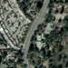
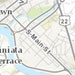
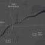
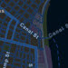
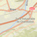

The web scene is the core element of 3D mapping across the ArcGIS platform. It defines the content, style, environment, and slides of your scene and it can be shared across multiple ArcGIS web and desktop applications. Web scenes can be created, published, and consumed in ArcGIS Pro and ArcGIS Online with the Scene Viewer. The web scene is saved as a JSON document that can be consumed by the ArcGIS API for JavaScript via the WebScene class to easily create compelling 3D applications.
Although you can easily create your own scenes, there are thousands of publically available web scenes in ArcGIS Online that you can use to get started with the API. You may modify or add new content to these scenes.
To load a WebScene into a SceneView, you need to simply reference the ID of the web scene item in ArcGIS Online via the portalItem property of this class.
var scene = new WebScene({
// autocasts as esri/portal/PortalItem
portalItem: {
id: "affa021c51944b5694132b2d61fe1057" // ID of the WebScene on arcgis.com
}
});
Then you must reference the WebScene instance in the map property of a SceneView.
var view = new SceneView({
map: scene, // The WebScene instance created above
container: "viewDiv"
});
This will load all layers and scene options into the 3D SceneView.
The WebScene defines the content of your scene and how the scene looks when it is loaded in your application. There are several common properties of a web scene that you will likely interact with when using this class:
- Layers: defines the content and styling of the web scene, as well as popups, labels, legend and other settings.
- Basemap: defines the basemap layers of the web scene.
- Ground: defines the elevation layers of the web scene.
- Presentation: contains the web scene slides.
- InitialViewProperties
- Environment: configures lighting, shadows and atmosphere of the scene.
- Viewpoint: configures the initial viewpoint.
- ViewingMode: defines if the web scene is global or local.
There are two types of web scenes: global or local. Global scenes render the earth as a sphere while Local scenes render the earth on a flat plane. Global web scenes can be created with a WebMercator or GCS WGS84 spatial reference, while local web scenes can be created with any projected coordinate system. Read the ArcGIS Online help to learn more about choosing global or local scenes.
Slides store a snapshot of a visualization state of the scene that can be re-applied to the scene at a later time. Slides contain properties for viewpoint, layer visibilities, basemap and environment (as well as a title and thumbnail) so that users of a 3D application can easily navigate the scene and accurately recreate a stored view of that scene.
The WebScene class will be able to save a web scene to ArcGIS Online or Portal in future versions of the API.
Constructors
new WebScene(properties)
| Name | Type | Description |
|---|---|---|
properties | Object | optional See the properties for a list of all the properties that may be passed into the constructor. |
Property Overview
| Name | Type | Summary | |
|---|---|---|---|
| Collection | A collection of all the layers in the map. more details | more details | |
| Basemap | Specifies a basemap for the map. more details | more details | |
| Extent | This property only applies to local scenes. more details | more details | |
| Boolean | This property only applies to local scenes. more details | more details | |
| Ground|String | Specifies the surface properties for the map. more details | more details | |
| InitialViewProperties | The initial view of the WebScene. more details | more details | |
| Collection | A collection of operational layers in the map. more details | more details | |
| Boolean | Indicates whether the instance has loaded. more details | more details | |
| Error | The Error object returned if an error occurred while loading. more details | more details | |
| String | Represents the status of a load operation. more details | more details | |
| PortalItem | The portal item from which the WebScene is loaded. more details | more details | |
| Presentation | Provides a Collection of slides that act as bookmarks for saving predefined viewpoints and visible layers. more details | more details | |
| Object | The WebScene version. more details | more details |
Property Details
allLayersCollectionreadonly
A collection of all the layers in the map. This collection contains basemap layers, operational layers and ground layers. Group Layers and their children layers are also part of this collection. Reference layers in the basemap will always be included at the end of the collection.
Layers should not be added directly to this collection. They must only be added via the layers, basemap or gound properties.
Example
// Find a layer with title "US Counties" var foundLayer = map.allLayers.find(function(layer) { return foundLayer.title === "US Counties"; }); // Create a filtered collection of the non-group layers var nonGroupLayers = map.allLayers.filter(function(layer) { return !foundLayer.layers; }); // Listen for any layer being added or removed in the Map map.allLayers.on("change", function(event) { console.log("Layer added: ", event.added); console.log("Layer removed: ", event.removed); console.log("Layer moved: ", event.moved); });Specifies a basemap for the map. The basemap is a set of tile layers that give geographic context to the MapView or SceneView and the other operational layers in the map.
This value can be an instance of Basemap or one of the strings listed in the table below.
Value Description streets 
satellite  hybrid 
topo  gray 
dark-gray  oceans 
national-geographic 
terrain 
osm 
dark-gray-vector gray-vector streets-vector topo-vector streets-night-vector  streets-relief-vector  streets-navigation-vector Example
// Set the basemap in the constructor var map = new Map({ basemap: "streets" }); // Set the basemap after the map instance is created map.basemap = "topo";This property only applies to local scenes. Represents an optional clipping area used to define the bounds or Extent of a local scene. If defined, only data (including the basemap) within the area will be displayed.
Set the clippingEnabled property to
trueto apply the specified clippingArea to the view.- See also:
clippingEnabledBoolean
This property only applies to local scenes. Determines whether clipping using the clippingArea is enabled.
- See also:
Default Value: falseSpecifies the surface properties for the map. This property is only relevant when adding the map to a 3D SceneView. It renders the terrain or topographical variations in the real world on the map's surface with a collection of ElevationLayer.
This value can be an instance of Ground, or the string
world-elevationfor a default instance of ground using the World Elevation Service.- See also:
Examples
// Use the world elevation service var map = new Map({ basemap: "topo", ground: "world-elevation" });// Create a map with the world elevation layer overlaid by a custom elevation layer var worldElevation = ElevationLayer({ url: "//elevation3d.arcgis.com/arcgis/rest/services/WorldElevation3D/Terrain3D/ImageServer" }); var customElevation = ElevationLayer({ url: "http://my.server.com/arcgis/rest/service/MyElevationService/ImageServer" }); var map = new Map({ basemap: "topo", ground: new Ground({ layers: [ worldElevation, customElevation ] }) });initialViewPropertiesInitialViewProperties autocast
The initial view of the WebScene. This object contains properties such as viewpoint, spatialReference, viewingMode, and environment that should be applied to the SceneView when the scene loads.
layersCollection autocast
A collection of operational layers in the map. This property only contains interactive operational layers, such as FeatureLayers, WebTileLayers and GraphicsLayers that may be queried, assigned different renderers, analyzed, etc. It does not include basemaps.
A layer is a collection of one or more features, or graphics, that represent real-world phenomena. Each feature contains a symbol and geographic data that allows it to be rendered on the map as a graphic with spatial context. Features within the layer may also contain data attributes that provide additional information that may be viewed in popup windows and used for rendering the layer.
Layers may be added in the constructor of Map, with the add() or addMany() method, or directly to the layers collection using add() or addMany().
Example
// Add layers in the constructor of Map using an array var fl = new FeatureLayer(url); var gl = new GraphicsLayer(); var map = new Map({ layers: [fl, gl] }); // Add layers using addMany() map.addMany([fl, gl]); // Add layers using layers collection map.layers.addMany([fl, gl]);loadedBooleanreadonly
Indicates whether the instance has loaded. When
true, the properties of the object can be accessed. A WebScene is considered loaded when its layers and basemap are fully created, but not yet loaded.Default Value: falseloadErrorErrorreadonly
The Error object returned if an error occurred while loading.
Default Value: nullloadStatusStringreadonly
Represents the status of a load operation.
Value Description not-loaded The object's resources have not loaded. loading The object's resources are currently loading. loaded The object's resources have loaded without errors. failed The object's resources failed to load. See loadError for more details. Default Value: not-loadedportalItemPortalItem autocast
The portal item from which the WebScene is loaded.
presentationPresentation autocast
Provides a Collection of slides that act as bookmarks for saving predefined viewpoints and visible layers.
- See also:
versionObjectreadonly
The WebScene version.
Method Overview
| Name | Return Type | Summary | |
|---|---|---|---|
Adds a layer to the layers collection. more details | more details | ||
Adds a layer or an array of layers to the layers collection. more details | more details | ||
| Promise | An instance of this class is a Promise. more details | more details | |
| Layer | Returns a layer based on the given layer id. more details | more details | |
| Boolean | Checks if a property is specified for the instance. more details | more details | |
| Boolean | An instance of this class is a Promise. more details | more details | |
| Boolean | An instance of this class is a Promise. more details | more details | |
| Boolean | An instance of this class is a Promise. more details | more details | |
| Promise | Triggers the loading of the WebScene instance. more details | more details | |
| Promise | An instance of this class is a Promise. more details | more details | |
| Layer | Removes the specified layer from the layers collection. more details | more details | |
| Layer[] | Removes all layers. more details | more details | |
| Layer[] | Removes the specified layers. more details | more details | |
| Layer | Changes the layer order. more details | more details | |
| Promise | An instance of this class is a Promise. more details | more details |
Method Details
add(layers, index) inherited
Adds a layer to the layers collection.
Name Type Description layersLayer Layer to be added to the layers collection.
indexNumber optional A layer can be added at a specified index in the layers collection. If no index is specified or the index specified is greater than the current number of layers, the layer is automatically appended to the list of layers in the layers collection and the index is normalized.
addMany(layers, index) inherited
Adds a layer or an array of layers to the layers collection.
Name Type Description layersLayer[] Layer(s) to be added to the layers collection.
indexNumber optional A layer can be added at a specified index in the layers collection. If no index is specified or the index specified is greater than the current number of layers, the layer is automatically appended to the list of layers in the layers collection and the index is normalized.
always(callbackOrErrback)returns {Promise}
An instance of this class is a Promise. Therefore
always()may be used to execute a function if the promise is rejected or resolved. The input function will always execute no matter the response. For more information about promises, see the Working with Promises guide page.Name Type Description callbackOrErrbackFunction optional The function to execute when the promise is rejected or resolved.
Returns:
Type Description Promise Returns a new promise for the result of callbackOrErrback.Example
// Although this example uses MapView, any class instance that is a promise may use always() in the same way var view = new MapView(); view.always(function(){ // This function will always execute whether or not the promise is resolved or rejected });Returns a layer based on the given layer id.
Name Type Description layerIdString The ID assigned to the layer.
Returns:
Type Description Layer Returns the requested layer object or undefinedif not found.Checks if a property is specified for the instance.
Since Accessor subclasses store property values in a cache, this is a specialized implementation of
Object.prototype.hasOwnPropertyfor Accessor that checks if the given property has a value stored in its property cache.Name Type Description propertyNameString The name of the property to test.
Returns:
Type Description Boolean Returns trueif the property is specified in the instance.- See also:
isFulfilled()returns {Boolean}
An instance of this class is a Promise. Therefore
isFulfilled()may be used to verify if the promise is fulfilled (either resolved or rejected). If it is fulfilled,truewill be returned. See the Working with Promises guide page for more information about promises.Returns:
Type Description Boolean Indicates whether the promise has been fulfilled (either resolved or rejected). isRejected()returns {Boolean}
An instance of this class is a Promise. Therefore
isRejected()may be used to verify if the promise is rejected. If it is rejected,truewill be returned. See the Working with Promises guide page for more information about promises.Returns:
Type Description Boolean Indicates whether the promise has been rejected. isResolved()returns {Boolean}
An instance of this class is a Promise. Therefore
isResolved()may be used to verify if the promise is resolved. If it is resolved,truewill be returned. See the Working with Promises guide page for more information about promises.Returns:
Type Description Boolean Indicates whether the promise has been resolved. load()returns {Promise}
Triggers the loading of the WebScene instance.
A WebScene is considered loaded when its operational layers, basemap and ground are fully created. When created with a portalItem,
load()will first fetch its data to create the content, otherwise it resolves immediately.The SceneView automatically calls the
load()method when a WebScene instance is added to its map property so it can display in the view and load each individual layer. If the WebScene is used outside of a view, for example to preload it, you must callload()explicitly to interact with its resources.Returns:
Type Description Promise Resolves when the WebScene is loaded. - See also:
Example
// programmatically load all the layers require([ "esri/WebScene", "dojo/promise/all" ], function( WebScene, all ) { var scene = new WebScene({ portalItem: { id: "affa021c51944b5694132b2d61fe1057" } }); scene.load() .then(function() { // load the basemap to get its layers created return scene.basemap.load(); }) .then(function() { // grab all the layers and load them var allLayers = scene.allLayers; var promises = allLayers.map(function(layer) { return layer.load(); }); return all(promises.toArray()); }) .then(function(layers) { // each layer load promise resolves with the layer console.log("all " + layers.length + " layers loaded"); }) .otherwise(function(error) { console.error(error); }); });otherwise(errback)returns {Promise}
An instance of this class is a Promise. Use
otherwise()to call a function once the promise is rejected.Name Type Description errbackFunction optional The function to execute when the promise fails.
Returns:
Type Description Promise Returns a new promise for the result of errback.Example
// Although this example uses MapView, any class instance that is a promise may use otherwise() in the same way var view = new MapView(); view.otherwise(function(error){ // This function will execute if the promise is rejected due to an error });Removes the specified layer from the layers collection.
Name Type Description layerLayer Layer to remove from the layers collection.
Returns:
Type Description Layer Returns the layer removed from the layers collection. Removes all layers.
Returns:
Type Description Layer[] Returns the layers removed from the layers collection. Removes the specified layers.
Name Type Description layersLayer[] Array of layers to remove from the layers collection.
Returns:
Type Description Layer[] Returns the layers removed from the layers collection. Changes the layer order. The first layer added is always the base layer, even if its order is changed.
Name Type Description layerLayer The layer to be moved.
indexNumber The index location for placing the layer. The bottom-most layer has an index of
0.Returns:
Type Description Layer Returns the layer that was moved. then(callback, errback, progback)returns {Promise}
An instance of this class is a Promise. Therefore
then()may be leveraged once an instance of the class is created. This method takes two input parameters: acallbackfunction and anerrbackfunction. Thecallbackexecutes when the promise resolves (when the instance of the class loads). Theerrbackexecutes if the promise fails. See the Working with Promises guide page for additional details.Name Type Description callbackFunction optional The function to call when the promise resolves.
errbackFunction optional The function to execute when the promise fails.
progbackFunction optional The function to invoke when the promise emits a progress update.
Returns:
Type Description Promise Returns a new promise for the result of callbackthat may be used to chain additional functions.Example
// Although this example uses MapView, any class instance that is a promise may use then() in the same way var view = new MapView(); view.then(function(){ // This function will execute once the promise is resolved }, function(error){ // This function will execute if the promise is rejected due to an error });